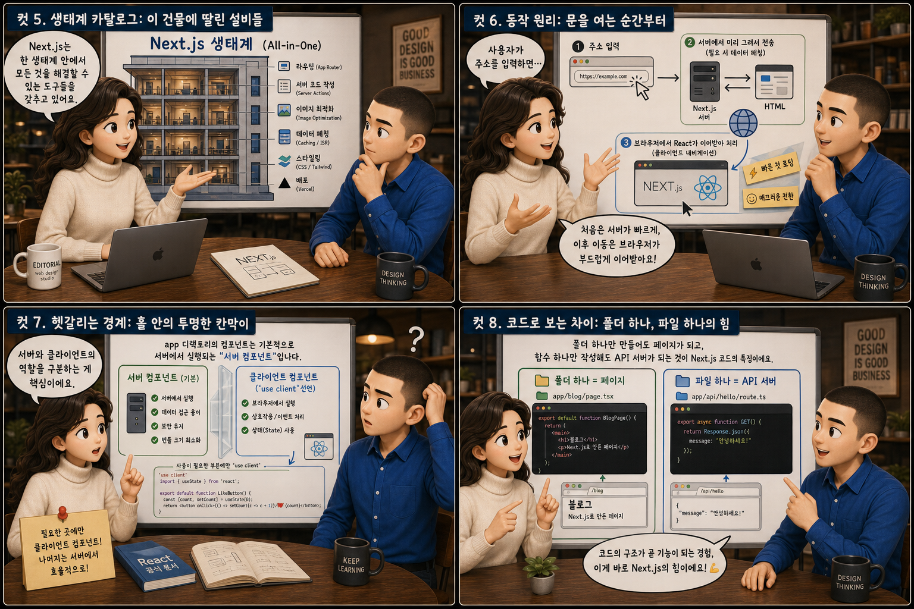

한 건물 안에 손님용 ‘홀’과 작은 ‘주방’을 함께 올리는 원스톱 레스토랑에 비유해 열두 장면으로 풀어봅니다.
React+Next.js
React로 화면을 만들다 보면 결국 데이터를 요청하고 처리할 서버도 필요해집니다. 원래대로라면 화면을 짓는 팀과 서버를 짓는 팀을 따로 불러야 하지만, Next.js는 이 둘을 같은 건물 안에 한 번에 지어주는 건축 패키지입니다. React가 손님이 앉는 홀을 짓는 동안, Next.js는 같은 건물 한켠에 작은 주방까지 함께 올려줍니다. 이 글에서는 그 원스톱 레스토랑이 어떻게 만들어지는지, 하나의 건물 도면을 펼쳐놓고 하나씩 살펴봅니다.
PART 1 / 3 — 하나의 건물이 필요해진 이유 (컷 01–04)
fourcut-01 — 컷 01 ~ 04
컷 01
화면만 그리면 되는 줄 알았는데?
React로 화면을 만들다 보면 결국 데이터를 요청하고 처리할 서버도 필요해진다. Next.js는 이 화면(홀)과 서버(주방)를 같은 건물 안에 한 번에 지어주는 올인원 건축 패키지다.
React로 화면을 만들다 보면 언젠가는 꼭 서버에 데이터를 요청하고 저장하는 부분이 필요해집니다. 원래대로라면 화면을 짓는 팀과 서버를 짓는 팀을 따로 불러야 하지만, Next.js는 이 둘을 같은 건물 안에 한 번에 지어주는 건축 패키지입니다. React가 손님이 앉는 홀을 짓는 동안, Next.js는 같은 건물 한켠에 작은 주방까지 함께 올려줍니다. 이 시리즈는 그 원스톱 레스토랑이 어떻게 만들어지는지 열두 장면으로 풀어봅니다.
컷 02
정의부터 명확히: React 위에 한 겹 더
Next.js는 React 위에 라우팅, 렌더링 전략, API 서버 기능까지 얹어주는 “풀 패키지” 프레임워크다.
Next.js는 React 위에 지어진 프레임워크로, React만으로는 갖추기 번거로운 라우팅, 서버 사이드 렌더링, API 서버, 이미지 최적화 같은 기능을 처음부터 세트로 제공합니다. React가 ‘화면을 어떻게 그릴지’를 다룬다면, Next.js는 그 위에 ‘이 화면을 실제 서비스로 만드는 데 필요한 나머지 전부’를 더해주는 층이라고 볼 수 있습니다. 그래서 흔히 Next.js를 React + α, 즉 화면을 넘어 서비스 하나를 통째로 지어주는 건축 패키지라고 설명합니다.
컷 03
나란히 비교: 늦게 차리는 상 vs 미리 차려둔 상
순수 React는 브라우저가 도착한 뒤에야 화면을 그리기 시작하지만, Next.js는 서버가 미리 그려둔 화면을 먼저 보여준 뒤 나머지를 이어받는다.
순수 React로 만든 SPA(Single Page Application)는 브라우저가 자바스크립트를 전부 내려받은 뒤에야 화면을 그리기 시작하기 때문에, 처음 접속했을 때 잠깐 빈 화면이나 로딩 표시를 보게 되는 경우가 많습니다. Next.js는 서버에서 미리 화면의 HTML을 그려두는 SSR(Server-Side Rendering)이나 빌드 시점에 아예 페이지를 완성해두는 SSG(Static Site Generation)를 지원해서, 손님이 문을 열자마자 이미 차려진 테이블을 볼 수 있게 해줍니다. 그 결과 초기 로딩이 체감상 더 빠르고, 검색엔진 크롤러도 완성된 HTML을 바로 읽을 수 있어 SEO에도 유리합니다. 손님을 문 앞에 세워두고 나서야 상을 차리기 시작할지, 미리 차려두고 맞이할지의 차이입니다.
컷 04
한 문장으로 정리하면
Next.js는 React를 기반으로 화면과 서버 역할을 한 프로젝트 안에서 함께 만들 수 있게 해주는 풀스택 프레임워크다.
REACT
사용자가 보고 조작하는 화면
NEXT.JS
그 화면 + 서버를 한 프로젝트에
definition
Next.js는 React를 기반으로 화면(프론트엔드)과 API·렌더링(백엔드 역할)을 한 프로젝트 폴더 안에서 함께 만들 수 있게 해주는 풀스택 프레임워크입니다. 이 한 문장만 기억해도 왜 사람들이 Next.js를 ‘단순한 React 라이브러리’가 아니라 ‘서비스를 완성하는 프레임워크’라고 부르는지 이해할 수 있습니다. 화면만 그리고 끝나는 게 아니라, 그 화면이 필요로 하는 서버 역할까지 같은 자리에서 해결해주는 것이 Next.js의 정체성입니다.
PART 2 / 3 — 건물 안에서 일어나는 일 (컷 05–08)

fourcut-02 — 컷 05 ~ 08
컷 05
생태계 카탈로그: 이 건물에 딸린 설비들
Next.js는 라우팅, 서버 코드 작성, 이미지 최적화, 배포까지 한 생태계 안에서 해결할 수 있는 여러 도구를 갖추고 있다.
Next.js는 폴더 구조 자체가 주소가 되는 파일 기반 라우팅을 제공해서, app 디렉토리 안에 폴더를 만들면 그것이 곧 웹사이트의 경로가 됩니다. API Routes 기능을 쓰면 같은 프로젝트 안에 백엔드 코드를 작성해 데이터 요청을 처리하는 작은 주방을 따로 지을 수 있고, 이미지 최적화 기능은 사진을 자동으로 가볍고 빠르게 변환해줍니다. 그리고 이 모든 것은 Next.js를 만든 회사인 Vercel의 배포 플랫폼과 특히 매끄럽게 맞물리도록 설계되어 있습니다.
컷 06
동작 원리: 문을 여는 순간부터
사용자가 주소를 입력하면 Next.js는 필요에 따라 서버에서 화면을 미리 그려 보내고, 이후 페이지 이동은 브라우저 안에서 React가 이어받아 처리한다.
사용자가 주소창에 URL을 입력하고 엔터를 누르면, Next.js 서버는 그 페이지에 맞는 화면을 미리 그려서(SSR이나 SSG) 완성된 HTML을 보내줍니다. 이 과정에서 필요하면 같은 프로젝트 안의 API 라우트, 즉 작은 주방을 거쳐 데이터베이스나 외부 서비스에서 정보를 가져옵니다. 화면이 브라우저에 도착한 뒤에는 React가 그 위에 자바스크립트 상호작용을 입혀(hydration), 이후 다른 페이지로 이동할 때는 서버를 매번 새로 거치지 않고 브라우저 안에서 훨씬 빠르게 화면을 바꿔줍니다.
컷 07
헷갈리는 경계: 홀 안의 투명한 칸막이
app 디렉토리에서는 컴포넌트가 기본적으로 서버에서 실행되는 “서버 컴포넌트”이고, 브라우저 상호작용이 필요한 부분만 'use client'를 선언해 따로 표시해야 한다.
Next.js의 app 디렉토리 안에서 만드는 컴포넌트는 별다른 표시가 없으면 기본적으로 서버 컴포넌트로 취급되어, 서버에서 미리 실행되고 그 결과만 화면에 전달됩니다. 반면 버튼 클릭, 입력창, 상태 변화처럼 브라우저에서 실시간으로 반응해야 하는 부분은 파일 맨 위에 'use client'를 선언해 클라이언트 컴포넌트로 따로 표시해야 합니다. 문제는 이 경계가 코드만 봐서는 잘 드러나지 않는다는 점인데, 같은 폴더 안에 있는 비슷하게 생긴 파일이라도 어느 쪽인지에 따라 실행되는 위치와 사용할 수 있는 기능이 완전히 달라집니다.
컷 08
코드로 보는 차이: 폴더 하나, 파일 하나의 힘
폴더 하나만 만들어도 페이지가 되고, 함수 하나만 작성해도 API 서버가 되는 것이 Next.js 코드의 특징이다.
app/page.tsx — 화면(홀)
// 폴더 이름이 곧 주소가 된다export default function Page() {
return <h1>Hello</h1>;
}
app/api/orders/route.ts — 주방
// GET 함수 하나가 곧 API 서버가 된다export async function GET() {
return Response.json({ items: [] });
}
Next.js의 app 디렉토리 안에 page.tsx 파일을 담은 폴더를 하나 만들면, 그 폴더 경로가 그대로 웹사이트 주소가 되고 그 파일 안의 코드가 화면(홀)을 그립니다. 같은 방식으로 api 폴더 안에 route.ts 파일을 만들고 GET 함수 하나만 작성하면, 그 자체로 요청을 받아 데이터를 돌려주는 작은 API 서버, 즉 주방이 완성됩니다. 화면 쪽 코드에서 fetch('/api/orders')로 이 주방에 주문을 넣으면, 같은 프로젝트 안에서 화면과 서버가 자연스럽게 대화를 주고받습니다.
PART 3 / 3 — 실전 감각과 요약 (컷 09–12)
fourcut-03 — 컷 09 ~ 12
컷 09
흔한 실수: 경계와 이름표를 가볍게 보지 말 것
서버 컴포넌트와 클라이언트 컴포넌트를 구분하지 않고 아무 데나 useState를 쓰거나, 파일과 폴더 이름 규칙을 지키지 않으면 화면이 아예 뜨지 않거나 원하는 주소로 연결되지 않는다.
⚠ Error: useState only works in a Client Component
서버 컴포넌트는 브라우저에서 실행되지 않기 때문에 useState나 onClick 같은 상호작용 기능을 쓸 수 없는데, 이를 모르고 아무 파일에나 상태를 추가하면 곧바로 에러가 발생합니다. 이럴 땐 해당 파일 맨 위에 'use client'를 선언해 클라이언트 컴포넌트로 바꿔줘야 합니다.
✓ 파일/폴더 이름 규칙을 지키면 라우팅이 어긋나지 않는다
또 다른 흔한 실수는 Next.js가 정해둔 파일/폴더 이름 규칙, 예를 들어 page.tsx나 동적 경로를 나타내는 [id] 폴더 표기를 잘못 지키는 것인데, 이 규칙이 깨지면 원하는 주소로 페이지가 연결되지 않거나 아예 404 화면을 보게 됩니다.
두 실수 모두 ‘이 코드가 어디서 실행되는지, 이 폴더가 어떤 주소가 되는지’를 정확히 이해하지 못해서 생깁니다. 홀에 주방 레시피를 잘못 붙여두거나, 문패를 엉뚱하게 달아두는 것과 같은 실수입니다.
컷 10
트레이드오프 비교표: 통합의 대가
한 프로젝트 안에서 프론트와 백엔드, 렌더링 전략까지 통합 관리할 수 있어 생산성이 높지만, 그만큼 Next.js 고유의 파일 구조와 컴포넌트 규칙을 새로 익혀야 하는 학습 부담이 따른다.
one project, new rules to learn
비교 축
얻는 것
치러야 하는 것
프로젝트 구조
화면과 서버가 한 저장소에 통합
Next.js 고유의 폴더/파일 규칙을 새로 학습
생산성
배포 파이프라인 하나로 생산성 상승
초반 학습 곡선
렌더링 전략
SSR / SSG / CSR을 상황에 맞게 통합 선택
어떤 전략을 쓸지 판단하는 부담
컴포넌트 규칙
하나의 코드베이스로 통합 관리
서버/클라이언트 컴포넌트 구분 필요
팀 협업
한 팀이 한 저장소에서 함께 작업
새 팀원에게 Next.js 고유 규칙 설명 필요
Next.js를 쓰면 화면과 서버, 렌더링 전략까지 하나의 프로젝트 저장소 안에서 통합적으로 관리할 수 있어서, 여러 저장소와 배포 파이프라인을 따로 챙기지 않아도 되는 만큼 생산성이 크게 올라갑니다. 하지만 그 대가로 파일과 폴더 이름이 곧 라우팅 규칙이 되는 구조, 서버 컴포넌트와 클라이언트 컴포넌트를 구분하는 방식처럼 Next.js만의 고유한 규칙을 새로 익혀야 합니다. 즉 ‘한 곳에서 다 된다’는 편리함과 ‘이 프레임워크의 문법을 새로 배워야 한다’는 학습 비용이 함께 따라오는 선택입니다.
컷 11
실전 활용: 첫 삽을 뜨는 법
새 Next.js 프로젝트를 시작할 때는 npx create-next-app으로 기본 골격을 만든 뒤, 폴더 구조를 눈으로 훑어보고 개발 서버를 켜서 파일을 저장할 때마다 화면이 바로 바뀌는 것을 확인하는 것이 가장 빠르게 감을 잡는 방법이다.
🏗️ 프로젝트 생성 — 첫 삽
npx create-next-app@latest 실행
app/, public/, package.json부터 훑어보기
폴더 구조가 곧 주소 구조임을 확인
🔄 개발 서버 확인 — 되먹임
npm run dev로 개발 서버 실행
파일 하나를 고쳐서 저장
새로고침 없이 화면이 바로 바뀌는지 확인
새로운 Next.js 프로젝트를 시작하는 가장 쉬운 방법은 터미널에 npx create-next-app@latest를 입력하는 것으로, 이 명령어 하나가 라우팅과 설정이 이미 갖춰진 기본 골격을 한 번에 만들어줍니다. 만들어진 폴더를 열어 app 디렉토리와 public 폴더, package.json부터 훑어보면 이 건물이 어떻게 구성되어 있는지 감을 잡을 수 있습니다. 이어서 npm run dev로 개발 서버를 켜고 아무 파일이나 하나 고쳐 저장해 보면, 브라우저 화면이 새로고침 없이 곧바로 바뀌는 것을 눈으로 확인할 수 있는데, 이 즉각적인 되먹임이 Next.js로 ‘바이브 코딩’을 할 때 가장 먼저 익혀야 할 감각입니다.
컷 12
판별법과 핵심 요약: 한 지붕 아래 홀과 주방
화면을 그리는 코드만 있는지, 아니면 그 옆에 API 라우트나 서버 렌더링 설정까지 함께 있는지를 보면 순수 React 프로젝트인지 Next.js 프로젝트인지 바로 판별할 수 있다.
가장 간단한 판별법은 이것입니다. 프로젝트 폴더 안에 화면을 그리는 컴포넌트뿐 아니라 API 라우트나 서버 렌더링 설정까지 함께 들어 있다면 그것은 Next.js 프로젝트이고, 화면을 그리는 코드만 있고 나머지는 전부 다른 서버에 맡긴다면 순수 React 프로젝트입니다. React는 홀을 짓는 데 집중하고, Next.js는 그 홀에 더해 작은 주방과 배포까지 한 건물 안에 완성해주는 올인원 패키지입니다. 손님과 요리사가 한 지붕 아래서 만나는 원스톱 레스토랑처럼, Next.js는 프론트엔드와 백엔드를 한 프로젝트 안에서 함께 돌아가게 만들어줍니다.
React 위에 지어진 프레임워크다파일 구조가 곧 주소다서버가 미리 그려서 보낼 수 있다API 라우트로 백엔드도 같이 짠다서버/클라이언트 컴포넌트를 구분해야 한다판별법: API 라우트나 서버 렌더링이 있으면 Next.js
한 지붕 아래, 홀과 주방
React는 사용자가 보고 조작하는 화면을 그리고, Next.js는 그 화면에 필요한 라우팅과 렌더링, 그리고 API 서버까지 같은 프로젝트 안에 함께 지어줍니다. 손님이 앉는 홀과 요리가 만들어지는 주방이 한 건물 안에 있듯, 두 세계는 역할이 다르지만 하나의 웹 애플리케이션을 함께 완성합니다.